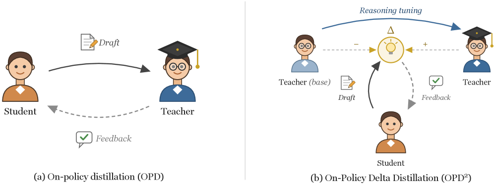
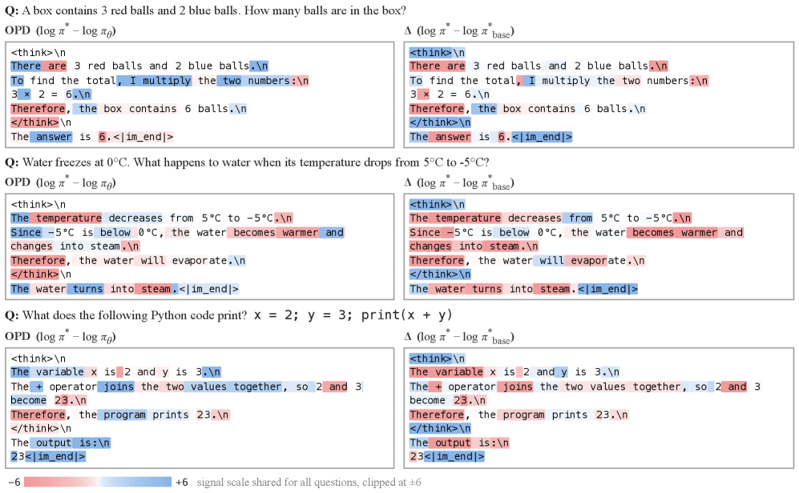

OPD-Squared: On-Policy Delta Distillation
Tracker note: the item has no arXiv ID, but the paper is locatable — "On-Policy Delta Distillation" (arXiv 2607.15161), by Byeongho Heo, Jaehui Hwang, Sangdoo Yun, and Dongyoon Han, submitted 16 July 2026. Grounded below in the fetched abstract and landing-page text; details beyond that are flagged.
TL;DR
- OPD² keeps the standard on-policy distillation loop (student rollouts, dense token-level teacher supervision) but swaps the target: instead of matching the teacher's output distribution, the student is trained on the delta signal — the difference between the reasoning-tuned teacher and that teacher's own base model from before reasoning tuning.
- Rationale: the raw teacher distribution mixes generic language modeling (which the student already has) with reasoning-specific changes; the delta isolates what reasoning tuning added, giving a more direct transfer signal. With centering and a joint condition, the paper says the signal concentrates on reasoning-relevant tokens while preserving the student's original abilities.
- Claimed results: consistent improvements over conventional OPD across mathematics, science, and code-reasoning benchmarks, with strong performance reached in a short post-training period. No specific numbers were available in my sources — verify tables in the paper.
Why this matters
In your OPD reading thread, the survey (opd-survey) frames the whole field as f-divergence minimization on student-sampled trajectories, with one axis being what to optimize. Almost everything on that axis to date has been a choice between divergences — forward KL vs reverse KL vs generalized JSD — while the target has stayed fixed: the teacher's full next-token distribution. OPD² is interesting precisely because it questions the target itself. The abstract states this directly: on-policy distillation's "fundamental design remains underexplored," and the paper's move is to redefine the distillation reward rather than the divergence.
There is also a connection to the failure modes in your no-free-lunch item. The "Rethinking OPD" result there says transfer is governed by teacher-student distributional overlap, not teacher strength — a strong teacher whose mass sits on tokens the student rarely produces transfers almost nothing. A raw teacher distribution carries all of the teacher's idiosyncrasies: style, formatting, tokenizer-level preferences, generic fluency. If most of that is either already known to the student or unreachable by it, the usable signal is a small fraction of the loss. Isolating the reasoning delta is one plausible way to raise the signal-to-noise ratio of each token of supervision — though note the paper itself motivates the delta as a more direct reasoning-transfer signal; the overlap framing is my connection, not the paper's claim (inferred from the thread — verify in the paper).
The core idea
Take a teacher T that was produced by reasoning-tuning a base model B (e.g., B is the pre-RL/pre-instruction-tuning checkpoint, T is the reasoning-tuned release). Conventional OPD trains the student to match T's token distribution on the student's own rollouts. OPD² instead defines the supervision from the difference between T and B — the abstract calls this the delta signal, "the difference between the teacher model and its base model prior to instruction tuning for reasoning capability," which "captures the changes induced by reasoning tuning."

Figure from the paper: Comparison of On-Policy Distillation (OPD) and our OPD². While conventional on-policy distillation trains students to follow the teacher's outputs, our OPD² utilizes the delta signal.
The precise insight: the teacher's distribution is not the quantity you want to transfer; the transformation that reasoning tuning applied to the teacher is. Where T and B agree, the token carries no reasoning-specific information — it is generic language modeling that any competent base model, including the student, already handles, and spending gradient there at best wastes capacity and at worst drags the student toward teacher idiosyncrasies. Where T and B disagree, that disagreement is, by construction, what reasoning tuning did. Concentrating the distillation reward there transfers the tuning, not the teacher.
This is the distributional-space analogue of ideas you already know from weight space and logit space: task arithmetic transfers a fine-tuning delta as a weight difference; proxy-tuning and contrastive-decoding-style methods apply a logit difference between a tuned and untuned model at inference time. OPD² brings the same "delta, not endpoint" logic into the on-policy distillation loss (the analogy is mine; the paper's own related-work positioning should be checked).
How it works
What the sources support:
- Setup: standard OPD scaffolding — this is framed as a post-training method where a teacher provides token-level supervision on student-generated rollouts, positioned as an alternative to reward-model-based RL ("alleviates the constraints imposed by reward models by providing token-level supervision," per the abstract).
- Reward definition: the delta signal replaces the conventional distillation reward. In the RL view of OPD (per-token reward = teacher-derived score of the student's sampled token), OPD² scores tokens by the teacher-vs-base difference rather than by teacher likelihood alone. The natural instantiation is a per-token reward built from log π_T − log π_B evaluated on the student's sampled tokens — but the exact functional form is (inferred from the thread — verify in the paper); the abstract confirms only that the delta signal is "a new distillation reward."
- Centering and a joint condition: the paper's landing page states that "with centering and the joint condition, OPD² focuses the signal on reasoning-related tokens while keeping the student's original ability." Centering plausibly normalizes the delta so that tokens where T and B agree contribute ~zero reward; the "joint condition" plausibly gates the signal on both models' assessments. Both mechanisms' exact definitions are in the paper body, which I could not fetch — treat my glosses as (inferred from the thread — verify in the paper).
- Training loop: otherwise the standard on-policy loop — student samples, dense per-token supervision, policy-gradient or KL-style update — inherited from the MiniLLM/GKD/Thinking-Machines lineage.
Update — the paper's HTML is now fetchable, and it confirms the glosses above with exact forms. The load-bearing equations (numbering per the paper):
Conventional OPD, loss and per-token reward (Eqs. 1–2):
where \(\pi_\theta\) is the student, \(\pi^*\) the teacher, and \(y\) is sampled from the student — the reward is teacher-vs-student log-likelihood on the student's own tokens.
The delta signal (Eq. 5) replaces the student with the teacher's base model in the contrast:
where \(\pi^*_{\mathrm{base}}\) is the teacher's base checkpoint before reasoning tuning, so \(R_t^\Delta\) scores each student-sampled token by how much reasoning tuning changed the teacher's preference for it.
Centering (Eqs. 6–7) and the joint condition (Eq. 8):
where \(A_t^{\mathrm{OPD}}\) is the analogously centered conventional reward (Eq. 6): centering zeroes out tokens where teacher and base agree on average, and the joint condition keeps the delta advantage only where it agrees in sign with the conventional OPD advantage — the gate that "focuses the signal on reasoning-related tokens while keeping the student's original ability."
The update is plain policy gradient on the gated advantage (Eq. 9):
i.e., each token the student sampled is reinforced in proportion to its centered, agreement-gated delta advantage.

Figure from the paper: Token-level distillation signals on simple reasoning examples. Blue and red indicate promoting and suppressing signals, respectively.
# OPD^2 training loop (assembled from the paper's Eqs. 1-9;
# the paper has no formal algorithm box)
Require: student pi_theta, teacher pi*, teacher's base model pi*_base
for each training step:
sample prompts x; student generates rollouts y ~ pi_theta(.|x)
for each token y_t in each rollout: # two teacher-side passes
R_OPD[t] = log pi*(y_t|x,y<t) - log pi_theta(y_t|x,y<t)
R_delta[t] = log pi*(y_t|x,y<t) - log pi*_base(y_t|x,y<t)
# centering: agreement tokens contribute ~zero
A_OPD = R_OPD - mean(log pi* - log pi_theta)
A_delta = R_delta - mean(log pi* - log pi*_base)
# joint condition: keep delta only where both signals agree in sign
for each t: A_D2[t] = A_delta[t] if A_delta[t] * A_OPD[t] > 0 else 0
# policy-gradient update on the student's own tokens
theta <- theta + lr * sum_t A_D2[t] * grad_theta log pi_theta(y_t|x,y<t)
Note the practical requirements this implies: you need white-box access to two models (the teacher and its pre-tuning base), ideally sharing a tokenizer with the student, and you pay two forward passes of teacher-side compute per rollout instead of one.
Results
My sources contain no benchmark tables or specific numbers. The abstract's claims, verbatim in substance:
- "The delta signal substantially improves on-policy distillation."
- "Experiments across mathematics, science, and code-reasoning benchmarks demonstrate that OPD² consistently outperforms conventional on-policy distillation."
- OPD² enables "reasoning LLMs to achieve strong performance with only a short post-training period."
The tweet adds nothing quantitative ("consistently improves on-policy distillation across math, science, and code benchmarks"). Which benchmarks, which teacher/student pairs, and effect sizes: all unverified here — read the tables before citing this paper for anything specific.
How it connects
- Standard KD / sequence-level KD: the target has always been the teacher's distribution (soft labels). OPD² is, to my knowledge, one of the first OPD works to argue the target itself is wrong for reasoning transfer — the delta is the payload.
- MiniLLM and GKD: supply the on-policy scaffolding (reverse-KL policy gradient; mixed-sampling stabilization). OPD² is orthogonal — you could in principle run GKD-style divergence choices against a delta-defined target. Whether the paper does this ablation is worth checking.
- Proxy-tuning / contrastive decoding / task arithmetic: same delta-transfer intuition in logit space at inference time (proxy-tuning steers a large base with a small tuned-minus-untuned logit offset) and in weight space (task vectors). OPD² amortizes the delta into the student's weights via on-policy training rather than applying it at decode time.
- Within your tracker: the survey (opd-survey) gives the axis this innovates on ("what to optimize"). The no-free-lunch thread's overlap result (Rethinking OPD) and thinking-collapse result both stem from raw-teacher-distribution supervision pushing students toward teacher idiosyncrasies; OPD²'s centered delta is a candidate mitigation for exactly that class of problem, though nobody has run that head-to-head as far as my sources show.
- RL-pretraining scaling law (also in your tracker): that paper argues RL largely amplifies behaviors the SFT policy already had. If reasoning tuning = a structured shift on top of a base model, OPD²'s premise — that the shift itself is compact and transferable — is a natural complement.
Critical take
- Access requirements are steep. You need the teacher's pre-reasoning-tuning base checkpoint. For open releases with published intermediate checkpoints this is fine; for most frontier teachers it is unavailable, which caps the method's applicability. Tokenizer mismatch between the teacher pair and the student is an additional practical constraint the abstract doesn't address.
- The delta is not pure reasoning. Reasoning tuning also changes style, verbosity, hedging behavior, and format compliance. The delta signal captures all changes induced by tuning, not just the reasoning-relevant ones; the centering/joint-condition machinery presumably tries to filter this, but how well it separates reasoning from tuning artifacts is an empirical question — and the thinking-collapse literature shows that distilling tuning-induced token preferences can actively suppress useful deliberation tokens.
- Amplified-difference signals can be noisy. Logit/probability differences between two models are exactly the quantity contrastive decoding had to clip aggressively (small-probability regions produce wild ratios). Whatever stabilization OPD² uses deserves scrutiny.
- No numbers verified. "Consistently outperforms conventional OPD" spans a lot of possible effect sizes; short-post-training claims especially need the compute accounting (two teacher-side models per step is not free).
If you remember three things
- OPD² changes the target of on-policy distillation: reward the student according to teacher-minus-base (the reasoning-tuning delta), not raw teacher likelihood.
- The premise: what you want to transfer is the transformation reasoning tuning applied, and the teacher-vs-base difference is a direct estimator of it — with centering and a joint condition to keep the signal on reasoning tokens.
- It requires white-box access to the teacher and its base checkpoint; claimed consistent gains over conventional OPD on math/science/code, but no specific numbers surfaced in my sources.